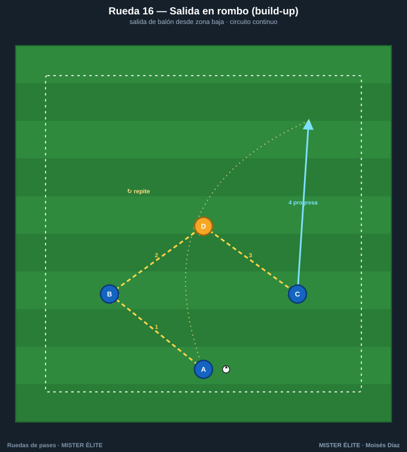
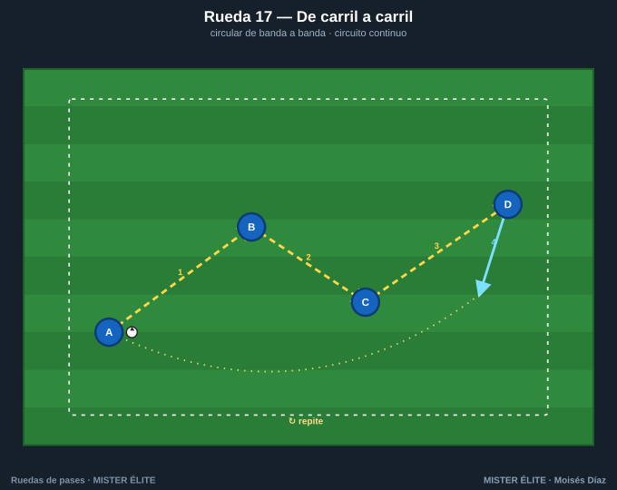
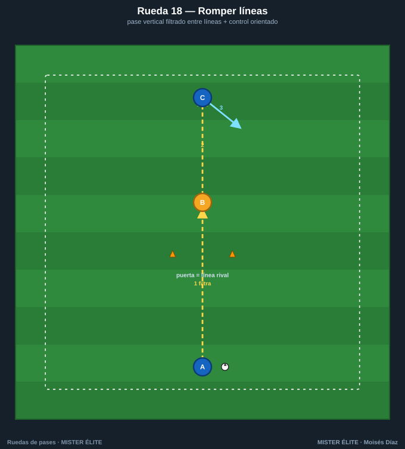
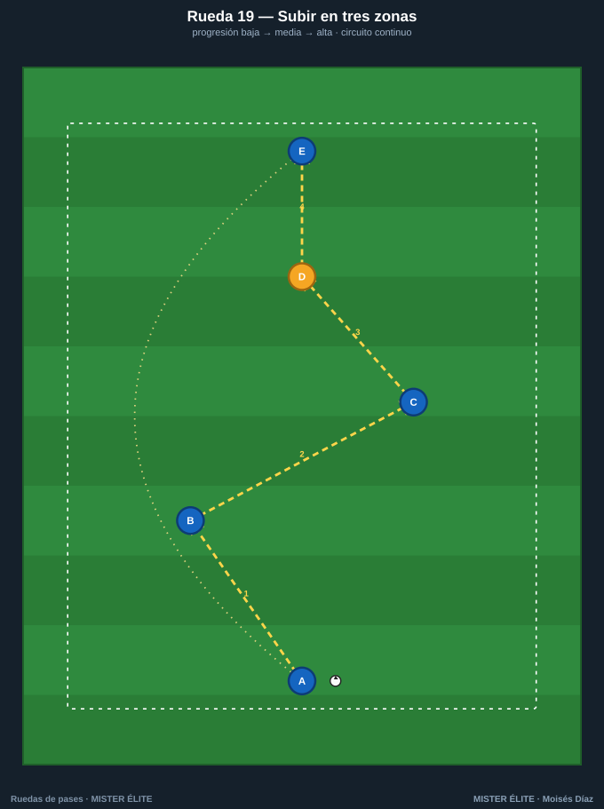
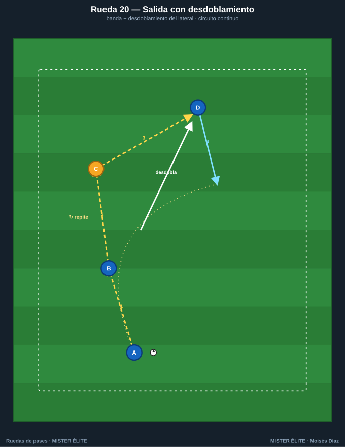

Familia 4 · Progresión por zonas (16–20)
La rueda toma dirección de juego: ya no circula en círculo, sino que sube el balón de zona a zona reproduciendo la salida del 4-3-3, la progresión por dentro o por fuera, romper líneas y el cambio de orientación. Es el puente directo entre la técnica y el modelo de juego.
Coaching points de la familia: control orientado hacia delante · recibir en semigiro para progresar · pase entre líneas con el peso justo · la rotación del trivote (que nunca queden dos en la misma línea).
Rueda 16 — Salida 4-3-3 (build-up)

- Objetivo: ⭐ reproducir la fase de inicio del 4-3-3: central conduce, el pívot aparece (check), cambio de orientación, dejada y filtrado al 9.
- Secuencia: 1) A (central) → B (pívot, que baja a recibir). 2) B abre a C (interior). 3) C cambia de orientación a D (extremo). 4) D filtra al 9 (E).
- Rotación: entrena cuándo y cómo rotan los tres medios; cada jugador sigue su pase. Alterna el lado del cambio.
- Parámetros: 5-6 estaciones · 1 balón · ~30-40 m de profundidad · 3-4 min/lado · 2 toques.
- Coaching: recibir en semigiro (half-turn) en el centro para jugar de cara; nunca dos medios en la misma línea.
- Subir nivel: primera línea de presión pasiva · versión espejo para 3-5-2 / 3-4-3 · finalizar con el 9.
Rueda 17 — De carril a carril

- Objetivo: circular de un carril al opuesto rompiendo por dentro (cambio de orientación corto).
- Secuencia: 1) A→B (diagonal interior). 2) B→C (horizontal por dentro). 3) C→D (diagonal a banda). 4) D conduce.
- Rotación: "sigue tu pase" en zig-zag; el circuito se cierra y se repite.
- Parámetros: 4 estaciones · 1 balón · saltos de carril de 10-12 m · 3 min/sentido · 2 toques (interiores a 1).
- Coaching: abrir el cuerpo al recibir para ver el carril contrario; peso del pase horizontal.
- Subir nivel: un toque en los interiores · defensor que orienta el pase.
Rueda 18 — Romper líneas

- Objetivo: pase vertical filtrado entre líneas y control orientado del receptor.
- Secuencia: 1) A filtra entre los conos a B. 2) B controla de cara y la da a C. 3) C ataca el espacio.
- Rotación: "sigue tu pase"; el balón vuelve al inicio y se repite.
- Parámetros: 3 estaciones · 1 balón · puerta de 2 m, A-B 10 m · 3 min · control orientado obligatorio.
- Coaching: el receptor entre líneas recibe de semiperfil y abre de cara; peso del filtrado al pie de salida.
- Subir nivel: dos puertas sucesivas (romper dos líneas) · B juega de primeras al delantero.
Rueda 19 — Subir el balón en tres zonas

- Objetivo: progresión zona baja → media → alta con apoyos escalonados (patrón tipo 4-2-3-1).
- Secuencia: 1) A→B. 2) B→C (cambio de lado en zona media). 3) C→D (entre líneas). 4) D de cara a E.
- Rotación: "sigue tu pase" en columna; circuito cerrado por el retorno al inicio.
- Parámetros: 5 estaciones · 1 balón · saltos verticales de 8-10 m · 3-4 min · 2 toques.
- Coaching: el 10 (D) recibe entre líneas de espaldas y abre el cuerpo; sincronizar los apoyos escalonados.
- Subir nivel: cada zona a 1 toque · final con remate de E · doble pivote que alterna quién baja.
Rueda 20 — Salida con desdoblamiento

- Objetivo: salida por banda con desdoblamiento del lateral (overlap / sobremarca).
- Secuencia: 1) A→B. 2) B al pie de C (extremo). 3) C deja de cara a D, que desdobla por fuera. 4) D conduce por la banda.
- Rotación: el lateral que desdobla rota a la cola de banda; los demás avanzan una estación.
- Parámetros: 4 estaciones · 1 balón · A-B 12 m, carrera de overlap 15-20 m · 3 min/banda · 2 toques.
- Coaching: el overlap se cronometra cuando el extremo fija al rival; dejada de cara al espacio.
- Subir nivel: underlap (por dentro) · terminar en centro de D · defensa al extremo.